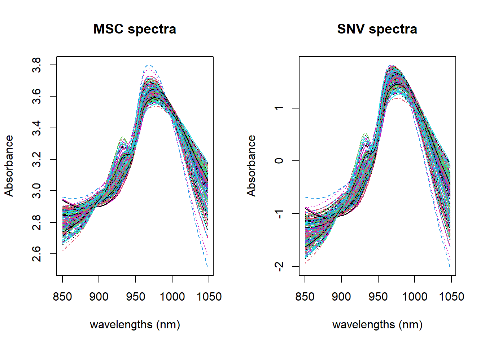
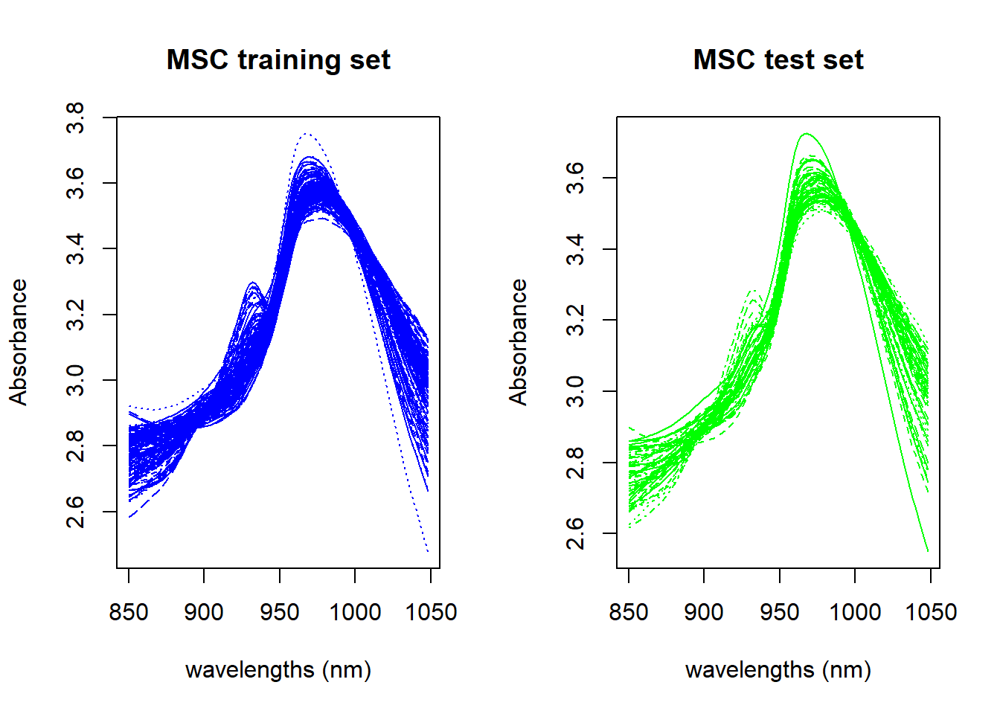

This is a very simple step, and we can see the result and compare it with SNV.
par(mfrow=c(1, 2))matplot(colnames(absorp_msc), t(absorp_msc), type ="l", xlab ="wavelengths (nm)", ylab ="Absorbance", main ="MSC spectra")matplot(colnames(absorp_snv), t(absorp_snv), type ="l", xlab ="wavelengths (nm)", ylab ="Absorbance", main ="SNV spectra")

Figure 1: MSC vs. SNV
as we can see they are quite similar if we don´t take into account that the SNV is centered. SNV and MSC have very different calculations:
SNV use independently every spectrum calculating the mean and the standard deviation of the spectrum data points and use them in the calculation.
MSC calculate the mean spectrum and use it to calculate the slope (b) and intercept (a) with a linear regression to every particular spectrum, and after that use “a” and “b” to correct that particular spectrum. A new a and b are calculated for the next spectrum using again the mean spectrum and the new spectrum in the regression.
Split data into training a validation
This point is a good occasion to split the data into a training ans a test set. There are several ways to do it, but let´s use tidymodels this time:
Now we have two sets (training and test), and we will continue working with the training set, hiding the test set until we use it for the final validation. But before to hide the test set we will use it this time to explain the process to apply math treatments to the test set. Let´s apply the MSC math treatment again, but this time only to the training set:
tec_prot_train_msc <-msc(tec_prot_train$spec)
Apply MSC to the test set
The mean train spectrum is keep as reference, and now we can apply the MSC to the test set:
par(mfrow=c(1, 2))matplot(colnames(tec_prot_train_msc), t(tec_prot_train_msc), type ="l", xlab ="wavelengths (nm)", ylab ="Absorbance", main ="MSC training set", col ="blue")matplot(colnames(tec_prot_test_msc), t(tec_prot_test_msc), type ="l", xlab ="wavelengths (nm)", ylab ="Absorbance", main ="MSC test set", col ="green")

Figure 2: Training and Test sets math treated with MSC
Now we can save these values in their respective dataframes: